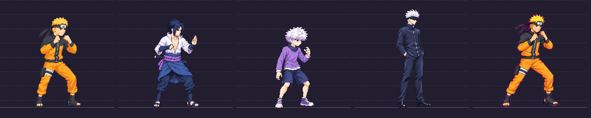

Needs review. Seven-head direction, same identity and athletic build. No idle redrawn yet.
Decision: approve naruto model_sheet v03 or request changes.
Caveats: inferred skull gives about7.2 heads; source skeleton about418px vs400 target (4.5% large). Raw antialiasing / excess colors remain; guard stance wider. Recommendation: request a correction before approval; source scale, palette and magenta edge fringe still miss the technical brief. No idle until you approve the model.
Left to right: approved Naruto, Sasuke, Killua, Gojo, candidate Naruto (declared half source scale). Scroll sideways on phone.
